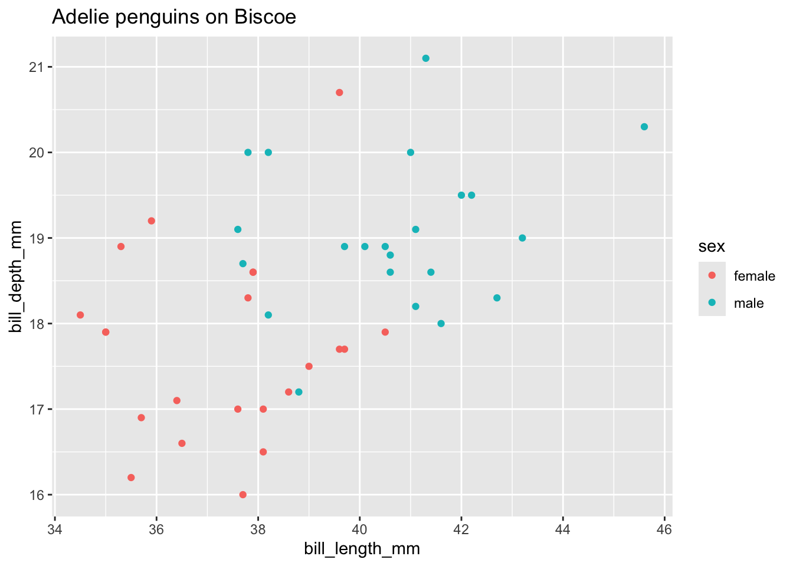
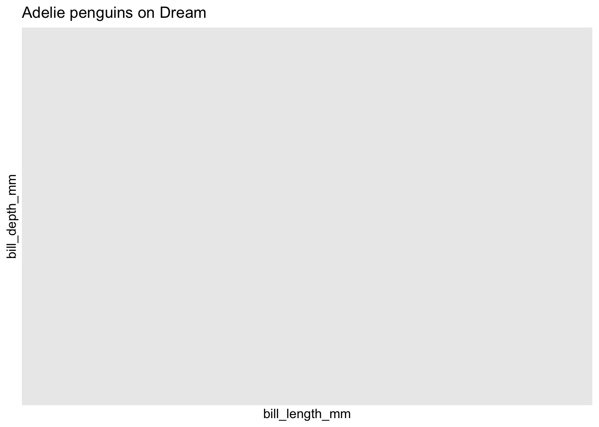
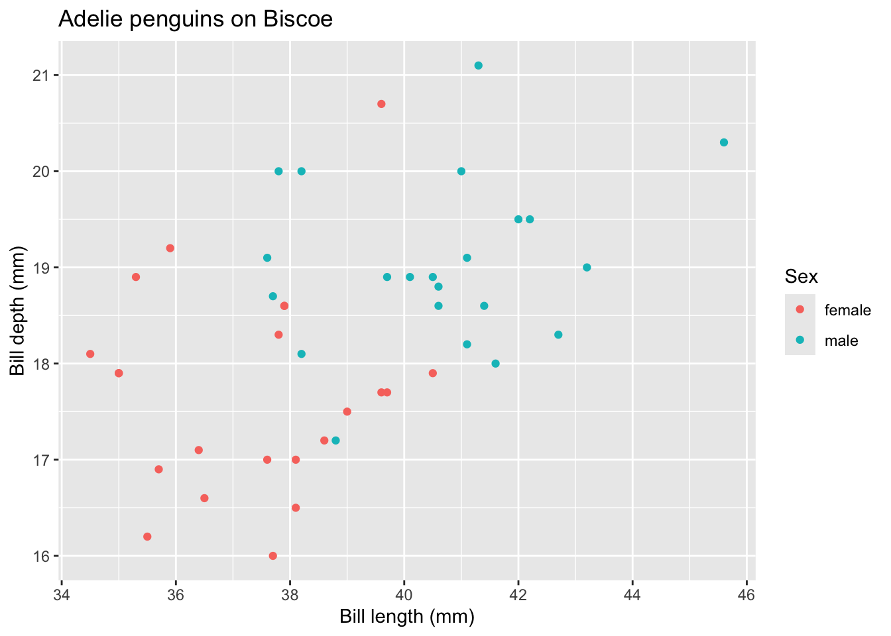
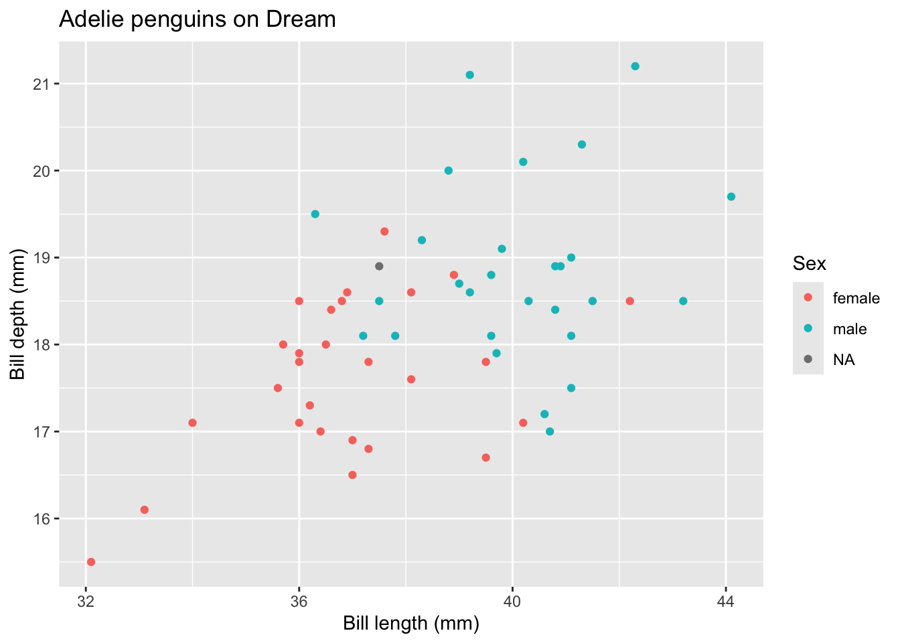

library(tidyverse)
x = 1:10
# Apply = good
square = function(x) x^2
squared_map = sapply(x, square)
# or even using an anonymous function
squared_map = sapply(x, function(x) x^2)
# using purrr
squared_map = map_dbl(x, function(x) x^2)
# For loop = bad
squared_loop = numeric(length(x))
for (i in seq_along(x)) {
squared_loop[i] = x[i]^2
}8 Research Software Engineering and Architecture in R
Objectives
- Understand what distinguishes research software from research scripts.
- Recognise the importance of software engineering principles in research.
- Understand functional programming approaches in
R. - Recognise common architectural patterns for research projects.
8.1 Introduction to Research Software Engineering
Research software engineering (RSE) is the discipline of applying software engineering principles and practices to the development of software that supports research. Unlike simple research scripts, which are often written quickly to answer a specific question or analyze a dataset, research software is intended to be robust, reusable, and maintainable over time. This distinction is important because research increasingly relies on complex computational methods, and poorly engineered code can lead to irreproducible results, wasted effort, and difficulties in collaboration.
Key aspects of research software engineering include version control, testing, documentation, and modular design. By adopting these practices, researchers can ensure that their code is understandable, reliable, and easier to share or extend. RSE also emphasizes the importance of collaboration between domain experts and software engineers, recognizing that high-quality research software is essential for reproducible and impactful science.
We have already seen several RSE principles in Chapter 3, such as using Quarto to document analyses and adopting version control. In this chapter we will first look at how to structure research code, then focus on designing testable and reusable code using functional principles, by interacting with the purrr library in tidyverse. We will finish with some further, more general practices.
8.2 Software Architecture
Software architecture is the high-level structure of a piece of software: how its code is divided into parts, and how those parts fit together. Research software is software, so thinking about how it is structured matters just as much as for any other program. Well-structured code is easier to understand, to test, to change, and to reuse in your next project.
8.2.1 Key Principles
A handful of principles cover most of what makes research code well structured.
- Separation of concerns. Divide the code into parts that each have a single, well-defined responsibility. In a data analysis the natural parts are loading the data, cleaning it, analysing or modelling it, visualising it and reporting the results.
- Modularity. Build those parts as independent, reusable components — in
R, usually functions — that can be understood, tested and changed on their own. - Don’t repeat yourself (DRY). Every piece of knowledge should be written down in exactly one place. If you find yourself copying and pasting code, or the same hard-coded value, there is probably a better way.
- Fail fast. Check for problems as early as possible and stop with a clear error, rather than letting a mistake travel silently through the rest of the analysis. We return to this in Section 8.4.1.
Separation of concerns is easiest to see by comparing two versions of the same analysis. In the first, every step is fused into one long pipeline:
# Everything mixed together
read_csv("data.csv") |>
filter(!is.na(x)) |>
mutate(y = log(x)) |>
ggplot(aes(x, y)) +
geom_point()In the second, each step is a function with a descriptive name, and each intermediate result is stored:
# Clear separation
raw_data = read_csv("data.csv")
clean_data = clean_dataset(raw_data)
model = fit_model(clean_data)
plot_results(model)The second version is longer to write, because each of clean_dataset, fit_model and plot_results has to be defined somewhere. But it reads as a summary of the analysis, each step can be checked on its own, and changing how the data are cleaned means editing one function rather than searching through a long pipeline.
8.2.2 An Example: Repeated Code
The penguins data from Week 4 contains measurements of three species of penguin, recorded on three islands. Suppose we want to plot bill length against bill depth for Adelie penguins on two of those islands. The quickest approach is to write the code for the first plot, then copy, paste and edit it for the second:
library(tidyverse)
penguins = read_csv("data/penguins.csv")
penguins |>
filter(species == "Adelie", island == "Biscoe") |>
ggplot(aes(x = bill_length_mm, y = bill_depth_mm, colour = sex)) +
geom_point() +
labs(title = "Adelie penguins on Biscoe")
penguins |>
filter(species == "Adelia", island == "Dream") |>
ggplot(aes(x = bill_length_mm, y = bill_depth_mm, colour = sex)) +
geom_point() +
labs(title = "Adelie penguins on Dream")

The second plot is empty, because of a typo — "Adelia" instead of "Adelie" — that crept in while editing the copy. R gives no error: filtering for a species that does not exist is perfectly valid, and simply returns no rows. This is the danger of repeated code: there are now two copies of the same logic that must be kept in step, and nothing to warn us when they drift apart.
Following the DRY principle, we write the logic once, as a function, and call it twice. While we are at it, the function can also fail fast by checking that the species and island it is given actually appear in the data:
plot_bills = function(data, species_name, island_name) {
if (!(species_name %in% data$species)) {
stop("Unknown species: ", species_name)
}
if (!(island_name %in% data$island)) {
stop("Unknown island: ", island_name)
}
data |>
filter(species == species_name, island == island_name) |>
ggplot(aes(x = bill_length_mm, y = bill_depth_mm, colour = sex)) +
geom_point() +
labs(
title = paste(species_name, "penguins on", island_name),
x = "Bill length (mm)",
y = "Bill depth (mm)",
colour = "Sex"
)
}
plot_bills(penguins, "Adelie", "Biscoe")
plot_bills(penguins, "Adelie", "Dream")

Now a typo in a species name stops the analysis with a clear error, rather than quietly producing an empty plot. Any improvement to the plot — such as the axis labels added above — is made in one place, and applies to every plot at once.
8.2.3 Organising a Project
As a project grows, it helps to split its code across several files, each with its own job. A common layout for a data analysis project looks like this:
my-project/
├── README.md # what the project is, and how to run it
├── data/ # the raw data, never edited by hand
├── R/ # function definitions, e.g. cleaning.R and plots.R
├── analysis.qmd # the report, which uses the functions to run the analysis
└── results/ # generated outputs, which can always be recreatedThe report loads the functions it needs with source(), which runs an R script as if its contents had been typed in:
source("R/cleaning.R")
source("R/plots.R")As in Chapter 3, every path here is relative to the project folder, so the project still works when it is moved to another computer: when Quarto renders analysis.qmd, paths are interpreted relative to the folder containing it. Keeping the functions in their own files separates the how (the functions) from the what (the narrative of the analysis), and lets several reports, or a Shiny app, share the same functions.
8.2.4 Structure in Research Code
Research code has some features of its own. Much of it is exploratory and written quickly, to find out whether an idea works at all, and much of it is thrown away. On the other hand, the parts that survive often live much longer than anyone expected, and they need to be reproducible. There is therefore a real tension between structuring code well and iterating quickly.
A reasonable compromise is to match the effort to how long the code will live:
- While exploring, rapid iteration is fine.
- Once you know what works, refactor: reorganise the code into functions, without changing what it does.
- Before sharing code, or building on it, clean it up.
You do not need an elaborate design: start simple, and add structure when you notice patterns, such as the same code appearing twice. A few habits cost almost nothing even while exploring, and pay off later: use functions, even small ones; avoid hard-coded absolute paths; and write down your assumptions as you make them.
8.3 Functional Programming in R
There exist a variety of programming paradigms that can be used to (broadly) separate languages into different categories, for example:
- Procedural Programming: Organizes code into procedures or routines (functions), focusing on a sequence of computational steps to be carried out.
- Object-Oriented Programming (OOP): Structures code around objects that encapsulate data and behavior, promoting modularity and reuse.
- Functional Programming: Emphasizes the use of pure functions and immutable data, avoiding side effects and enabling easier reasoning about code.
It is rare for a language to fall exclusively into one of these paradigms; R can support all three of the above. However, knowing about the principles of different programming paradigms can influence the code you write and result in more reproducible, reusable and maintainable code.
R is an excellent language in which to adopt a functional programming paradigm. In Week 2 we saw some of the core features of R that enable this, such as:
- First-class functions: Functions in R can be assigned to variables, passed as arguments, and returned from other functions.
- Anonymous (lambda) functions: R supports the creation of functions without names, useful for short, throwaway operations.
- Higher-order functions: It is easy to create functions that return functions. Functions like
lapply(),sapply(),purrr::map(), and others take functions as arguments and apply them over data structures.
The tidyverse library purrr gives access to even more functional features.
8.3.1 Pure Functions
This is the principle that functions should have no side effects; the same input should always produce the same output. This makes code much easier to test, debug and reason about.
# Pure = good
add = function(x, y) x + y
# Impure = bad
counter = 0
increment = function() {
counter <<- counter + 1
counter
}Recall from Section 2.4.3 that <<- is the super-assignment operator which can modify the global state. This should be avoided wherever possible.
8.3.2 Higher-Order Functions
8.3.2.1 map Functions
From Section 2.4.1, recall that a higher order function is a function that either accepts or returns another function. These are the foundation of functional data manipulation. To give a concrete example, a common use case is to map a list through a function, i.e., to take each element of the list and apply a function to it. In R these are materialised through the apply family of functions. Consider the following code:
Using the for loop it is easier to make mistakes because, inside the loop, we can modify the global state. Adopting functional principles simplifies and clarifies the code and makes it more testable (we can test the square function works as intended separately).
The map_dbl function from purrr is one member of a family of map functions. The most general is map() itself, which applies a function to each element and always returns a list. Because a list can hold anything, map() works whatever the function returns: a number, a vector, a data frame or even a plot.
map(1:3, function(v) v^2)[[1]]
[1] 1
[[2]]
[1] 4
[[3]]
[1] 9When each result is a single value of a known type, the typed variants return a vector of that type instead:
| Function | Returns |
|---|---|
map() |
A list; the results can be anything. |
map_lgl() |
A logical vector. |
map_int() |
An integer vector. |
map_dbl() |
A double (decimal) vector. |
map_chr() |
A character vector. |
map_vec() |
A vector of whichever type the results share. |
The typed variants check every result, and stop with an error if one is not a single value of the right type.
purrr also offers mapping over several vectors in parallel. map2 iterates over two vectors, passing one element of each to the function at every step, and pmap iterates over any number of vectors, supplied together in a list. Each comes with the same typed variants as map:
x = 1:10
y = rep(c(2, 3), 5)
map2_dbl(x, y, function(x, y) x^y) [1] 1 8 9 64 25 216 49 512 81 1000pmap_dbl(list(1:3, 4:6, 7:9), function(a, b, c) a + b * c)[1] 29 42 57
TipShorthands for Anonymous Functions
Anonymous functions are used so often with purrr that there are two shorter ways of writing them. \(v) is a shorthand for function(v), built into R itself (since version 4.1), so it works anywhere a function is expected. purrr also accepts a one-sided formula: write ~, and the placeholder .x stands for the argument that is passed in. These three calls are equivalent:
map_dbl(1:10, function(v) v^2) [1] 1 4 9 16 25 36 49 64 81 100map_dbl(1:10, \(v) v^2) [1] 1 4 9 16 25 36 49 64 81 100map_dbl(1:10, ~ .x^2) [1] 1 4 9 16 25 36 49 64 81 100For functions of two arguments, like the accumulator used by reduce below, the formula’s placeholders are .x and .y:
reduce(1:10, \(a, b) a + b)[1] 55reduce(1:10, ~ .x + .y)[1] 55Any of these can span several lines by wrapping the body in braces, e.g. \(df) { ... } or ~ { ... }; as with any function, the value of the last line is returned. All three styles are idiomatic, and you will see all of them in documentation and online, so it is worth being able to read each; use whichever you find most readable.
8.3.2.2 Why purrr?
Base R’s apply family can do most of what map does, so why use purrr at all? The main reason is that purrr’s functions are type stable: you can tell what type of result you will get just by reading the name of the function. sapply, by contrast, guesses what shape to return from the results it happens to receive:
sapply(1:3, function(v) v^2) # a numeric vector[1] 1 4 9sapply(1:3, function(v) c(v, v^2)) # a matrix! [,1] [,2] [,3]
[1,] 1 2 3
[2,] 1 4 9sapply(1:3, function(v) seq_len(v)) # a list![[1]]
[1] 1
[[2]]
[1] 1 2
[[3]]
[1] 1 2 3sapply(integer(0), function(v) v^2) # an empty list, not an empty vector!list()The last case is the most dangerous. Code that has always received a numeric vector from sapply can suddenly receive a list when its input happens to be empty — for example, when no files match a pattern — and then fail somewhere further on, far from the real cause. map_dbl always returns a double vector (of length zero, for an empty input), and if a result cannot fit in one it stops straight away, with an error that says which element was the problem:
map_dbl(integer(0), function(v) v^2)numeric(0)map_dbl(1:3, function(v) c(v, v^2))Error in `map_dbl()`:
i In index: 1.
Caused by error:
! Result must be length 1, not 2.map_int(1:3, function(v) v / 2)Error in `map_int()`:
i In index: 1.
Caused by error:
! Can't coerce from a number to an integer.This is the fail fast principle from Section 8.2 in action. purrr is also more consistent than the apply family in smaller ways: every map function takes the data first and the function second, which suits the pipe, and the choice between them depends only on the type you want back, rather than on remembering the differences between sapply, lapply, vapply and mapply.
8.3.2.3 Working with Lists of Results
Because map() returns a list, it is the natural tool when each step produces something more complicated than a single value. A common example is reading several files that share the same format:
files = list.files("data/monthly", pattern = "\\.csv$", full.names = TRUE)
monthly = files |> map(read_csv) # a list of tibbles, one per file
all_data = monthly |> list_rbind() # stacked into a single tibbleHere list.files returns the paths of all the files in data/monthly whose names match the regular expression "\\.csv$" (see Week 5), and list_rbind() combines a list of data frames into one by stacking their rows. (list_rbind() replaces the older map_dfr(), which you may still see in code online.)
A list of results can also be processed further before, or instead of, being combined into a single table. Below we split the penguins data into a list of three tibbles, one per species, and summarise each of them:
by_species = split(penguins, penguins$species) # a named list of tibbles
summaries = by_species |>
map(\(df) summarise(df, n = n(), mean_mass = mean(body_mass_g, na.rm = TRUE)))
summaries$Gentoo# A tibble: 1 x 2
n mean_mass
<int> <dbl>
1 124 5076.Each element of summaries is a one-row tibble, so a single statistic can be extracted from each with $, and collected into a vector with a typed map:
summaries |> map_dbl(\(s) s$mean_mass) Adelie Chinstrap Gentoo
3700.662 3733.088 5076.016 Notice that the result keeps the species names from the list. list_rbind() can turn those names into a column when combining the summaries into a single table:
summaries |> list_rbind(names_to = "species")# A tibble: 3 x 3
species n mean_mass
<chr> <int> <dbl>
1 Adelie 152 3701.
2 Chinstrap 68 3733.
3 Gentoo 124 5076.For a single data frame like this one, group_by() and summarise() (see Week 4) produce the same table more simply. Lists of results come into their own when the data arrive in separate pieces, such as one file per month, or when each piece produces something that does not fit in a table, such as a fitted model or a plot.
8.3.2.4 The reduce Function
“Reduce” operations reduce a vector to a scalar. We perform a reduce by specifying a binary operator that takes a “current” value (or “accumulator”) and the next element of the list, and return an updated “current” value.
The next example shows how we would use this approach to add up all the elements of a vector:
x = 1:10
sum_reduce_function = function(cur,new) cur + new
sum_x = sum(x)
sum_x_purrr = reduce(x, sum_reduce_function)
c(sum_x, sum_x_purrr)[1] 55 55We don’t necessarily need to specify a function here because we can instead use the symbolic + operation:
sum_x_purrr = reduce(x, `+`) # equivalently
sum_x_purr = x |> reduce(`+`) # with pipesThis version of reduce makes the assumption that cur and new have the same type (in this case, they are both integers). What happens internally is something like:
cur = sum_reduce_function(x[1], x[2])
print(cur)[1] 3for(i in 3:length(x)) {
cur = sum_reduce_function(cur, x[i])
}
cur[1] 55Sometimes it might not be appropriate to initialise the accumulator by applying reduce to the first two elements (for example, if the accumulator is not of the same type as the elements of the list). In this case we can use the .init argument to supply an initial value for the accumulator. The below example accumulates the sum and product of a vector with a single pass through it, which may be more efficient than multiple passes through the dataset.
reduce_sum_prod = function(cur, new) {
cur$sum = cur$sum + new
cur$prod = cur$prod * new
cur
}
reduce(
x,
reduce_sum_prod,
.init = list(sum=0, prod=1)
)$sum
[1] 55
$prod
[1] 36288008.3.2.5 Other Higher Order Functions
purrr it allows us to filter elements from vectors using a predicate; this is similar to the filter functions from dplyr (see Section 4.4.2), but works on vectors, not just tibbles. We can also perform other operations, like checking whether all elements match a predicate or none do.
x = 1:10
x |> keep(function(x) x > 5) # the second argument is a function that returns a boolean[1] 6 7 8 9 10# this is called a predicate.
x |> every(function(x) x > 5) # do all elements match?[1] FALSEx |> none(function(x) x > 10)[1] TRUEThe same calls, using the formula shorthand:
x |> keep(~ .x > 5)[1] 6 7 8 9 10x |> every(~ .x > 5)[1] FALSEThese functions work on lists just as well as on vectors. For example, with the list of species summaries from Working with Lists of Results:
# which species have a mean body mass above 4kg?
summaries |> keep(\(s) s$mean_mass > 4000) |> names()[1] "Gentoo"# were at least 50 penguins of every species measured?
summaries |> every(\(s) s$n >= 50)[1] TRUE8.3.3 Function Composition
We have already seen how this is implemented in R using the pipe operator; see Section 2.4.2
8.3.4 Currying
Currying is the process of taking a function and fixing some arguments of it, for example to allow it to be used in map functions. This is implemented in purrr using partial:
add_10 = partial(`+`, 10)
x = 1:10
x |> map_dbl(add_10) [1] 11 12 13 14 15 16 17 18 19 20names = c("Ada Lovelace", "Alan Turing", "Grace Hopper")
add_hello = partial(paste, "Hello")
names |> map_vec(add_hello)[1] "Hello Ada Lovelace" "Hello Alan Turing" "Hello Grace Hopper"In the second example, partial fixes the first argument of paste — the base-R string-combining function we met in Week 2 — producing a function that greets each name in turn.
8.4 Key Practices for Robust Research Software
The principles above help to write good, reusable code, but there are some further principles that make the whole software lifecycle more sustainable.
8.4.1 Defensive Programming
Defensive programming is the principle that functions should check that the inputs are expected before performing any operations. We saw an example of this in Lab 2, where the - operator implicitly wraps vectors if they are not of the same length:
x = 1:4
y = 1:2
x - y # we might expect that this throws an error - but it does not![1] 0 0 2 2This had an impact in a distance function we wrote:
distance = function(x, y) sqrt(sum((x-y)^2))
distance(x, y)[1] 2.828427To implement this defensively, we can use the stop function, which causes R to throw an error with an error message.
distance_defensive = function(x, y) {
if (!is.numeric(x) || !is.numeric(y)) {
stop("Both x and y must be numeric vectors.")
}
if (length(x) != length(y)) {
stop("x and y must have the same length.")
}
sqrt(sum((x - y)^2))
}
distance_defensive(x, y)Error in distance_defensive(x, y): x and y must have the same length.Now the function complains if we pass in vectors that are invalid.
stopifnot() offers a more compact way to write checks like these. It takes one or more conditions, does nothing if they are all TRUE, and otherwise stops with an error at the first condition that is not. Giving each condition a name sets the error message to report if it fails:
distance_stopifnot = function(x, y) {
stopifnot(
"Both x and y must be numeric vectors." = is.numeric(x) && is.numeric(y),
"x and y must have the same length." = length(x) == length(y)
)
sqrt(sum((x - y)^2))
}
distance_stopifnot(x, y)Error in distance_stopifnot(x, y): x and y must have the same length.Without names, stopifnot reports the failing condition itself, e.g. length(x) == length(y) is not TRUE. That is fine for quick checks, but a written explanation is much more helpful to somebody else using your function.
8.4.2 Error Handling with try-catch
In addition to defensive programming, robust research software should gracefully handle unexpected errors. In R, this can be achieved using try and tryCatch.
try(expr)evaluates an expression and continues execution even if an error occurs, returning the error as an object.tryCatch(expr, error = function(e) ...)allows you to specify custom behavior when errors (or warnings) occur.
For example:
result = try(distance_defensive(x,y))Error in distance_defensive(x, y) : x and y must have the same length.cat(paste0("The error was 'caught', so I can print it here:\n", result))The error was 'caught', so I can print it here:
Error in distance_defensive(x, y) : x and y must have the same length.The message is assembled with paste0() and printed with cat() (both introduced in Week 2); without the try, the error would have stopped the script before the cat call.
tryCatch is most useful when the same operation is repeated many times, and one failure should not stop all the others. A common case is reading a collection of files with map (see Working with Lists of Results): if one file is missing or corrupt, read_csv stops with an error, and the whole map call fails with it, discarding the files that were read successfully. Instead, we can write a function that returns NULL for any file it cannot read, and reports the problem with a message:
read_csv_or_null = function(path) {
tryCatch(
read_csv(path, show_col_types = FALSE),
error = function(e) {
message("Skipping ", path, ": it could not be read.")
NULL
}
)
}
files = c("data/penguins.csv", "data/no_such_file.csv", "data/student_grades.csv")
tables = files |> set_names() |> map(read_csv_or_null)Skipping data/no_such_file.csv: it could not be read.The first argument of tryCatch is the code to run. If it raises an error, the function given as error is called instead, with the error itself as its argument e (inside it, conditionMessage(e) returns the error’s message), and whatever that function returns becomes the result of tryCatch. set_names() names each element of a vector after its own value, so that the elements of tables are labelled with the file each came from:
tables |> map_lgl(is.null) # which files could not be read? data/penguins.csv data/no_such_file.csv data/student_grades.csv
FALSE TRUE FALSE tables |> compact() |> map_int(nrow) # rows in each file that could be read data/penguins.csv data/student_grades.csv
344 59 compact() drops the NULL elements of a list, leaving only the tables that were read successfully. (tryCatch can also handle warnings, by passing a function as warning, and run clean-up code whatever happens, through finally.)
purrr provides a more functional shortcut for this pattern. possibly() is a higher-order function: it takes a function, and returns a new version of it that returns a default value, given by otherwise, instead of raising an error:
read_csv_or_null = possibly(\(path) read_csv(path, show_col_types = FALSE), otherwise = NULL)
files |> set_names() |> map(read_csv_or_null) |> map_lgl(is.null) data/penguins.csv data/no_such_file.csv data/student_grades.csv
FALSE TRUE FALSE Unlike our tryCatch version, possibly fails silently, so it is worth checking afterwards which elements fell back to the default, as above. Its relative safely() keeps the error as well: the function it returns gives a list containing either a result or an error, so that you can inspect what went wrong.
8.4.3 Unit Testing (Advanced)
Throughout this chapter we have claimed that small, pure functions are easy to test. A unit test is a piece of code that calls a function with inputs for which we already know the right answer, and checks that the function returns it. Because a pure function always gives the same output for the same inputs, a test that passes today will keep passing until somebody changes the function — at which point a failing test tells them straight away that something has broken.
The simplest unit tests need nothing beyond base R: the stopifnot() function from Section 8.4.1 is enough. In tests we often leave the conditions unnamed, since the condition itself is then reported if it fails. Below, we collect some tests for a distance function into a function of their own, which takes the distance function to be tested as its argument:
check_distance = function(distance_fn) {
# a 3-4-5 right-angled triangle
stopifnot(distance_fn(c(0, 0), c(3, 4)) == 5)
# any point is at distance zero from itself
stopifnot(distance_fn(c(1, 2, 3), c(1, 2, 3)) == 0)
# vectors of different lengths must be rejected with an error
result = try(distance_fn(1:4, 1:2), silent = TRUE)
stopifnot(inherits(result, "try-error"))
"All tests passed."
}The last test uses try to run a call that should fail: silent = TRUE stops try from printing the error, and inherits(result, "try-error") checks that an error really did occur.
The defensive version of the function from Section 8.4.1 passes every test:
check_distance(distance_defensive)[1] "All tests passed."The original version, however, fails the last test, because it silently recycles the shorter vector rather than stopping with an error:
check_distance(distance)Error in check_distance(distance): inherits(result, "try-error") is not TRUEHad this test existed when the original distance was written, the recycling bug would have been caught immediately, rather than surfacing later as a wrong answer.
The tests above compare numbers with ==, which is safe here because each answer is a whole number. For results that are not, compare with isTRUE(all.equal(...)) instead, which allows for tiny rounding errors (see Week 2).
For larger projects, the testthat package (install it with install.packages("testthat")) is the standard testing framework in R. Each test is given a description, so that a failure report says exactly which behaviour has broken, and expect_* functions express the checks:
library(testthat)
test_that("distance is correct for a 3-4-5 triangle", {
expect_equal(distance(c(0, 0), c(3, 4)), 5)
})
test_that("distance rejects vectors of different lengths", {
expect_error(distance(1:4, 1:2))
})expect_equal allows for tiny rounding errors, like all.equal. Tests are usually kept in files of their own in a tests/ folder of the project (see Section 8.2), and the whole collection is run with testthat::test_dir("tests") every time the code changes.
8.4.4 Documentation Strategies
We have seen how to provide comments in R code. Quarto documents are also themselves a kind of documentation, allowing us to write explanatory text around our analysis. However, if implementing pure R functions it is important to provide further documentation to explain what the function does, what arguments it takes, and what it returns. If implemented properly, these will appear on hovering the function in RStudio, or when using ?function.
One of the most convenient ways to accomplish this is using the roxygen2 library. This allows us to provide documentation in comments, in our R code. If we were then to compile our code into an R package (beyond the scope of this course), we could use roxygen2 to autogenerate documentation for users.
roxygen2 requires comments in a specific format. Here’s an example:
#' The Euclidean distance between two vectors.
#'
#' Returns the Euclidean distance between the vectors x and y, implemented as \sqrt(\sum (x_i - y_i)^2)
#'
#' @param x The first vector
#' @param y The second vector
#' @return The distance between x and y
#' @examples
#' x = c(1,2)
#' y = c(3,4)
#' distance(x,y)
#' @export
#' @author Jon Cockayne
distance = function(x, y) {
if (!is.numeric(x) || !is.numeric(y)) {
stop("Both x and y must be numeric vectors.")
}
if (length(x) != length(y)) {
stop("x and y must have the same length.")
}
sqrt(sum((x - y)^2))
}8.4.5 Other Considerations
There is one final point that is beyond the scope of this course, but is nevertheless an important topic. It is included mainly to give you a reference to how to implement it in R.
- Dependency Management was mentioned in Chapter 2; it is bad practice to use
install.packagesto install packages in your Quarto scripts, but we still need to communicate what packages are required by our software to users. InRthis can be implemented using therenvpackage, which allows us to document dependencies and freeze particular versions required.